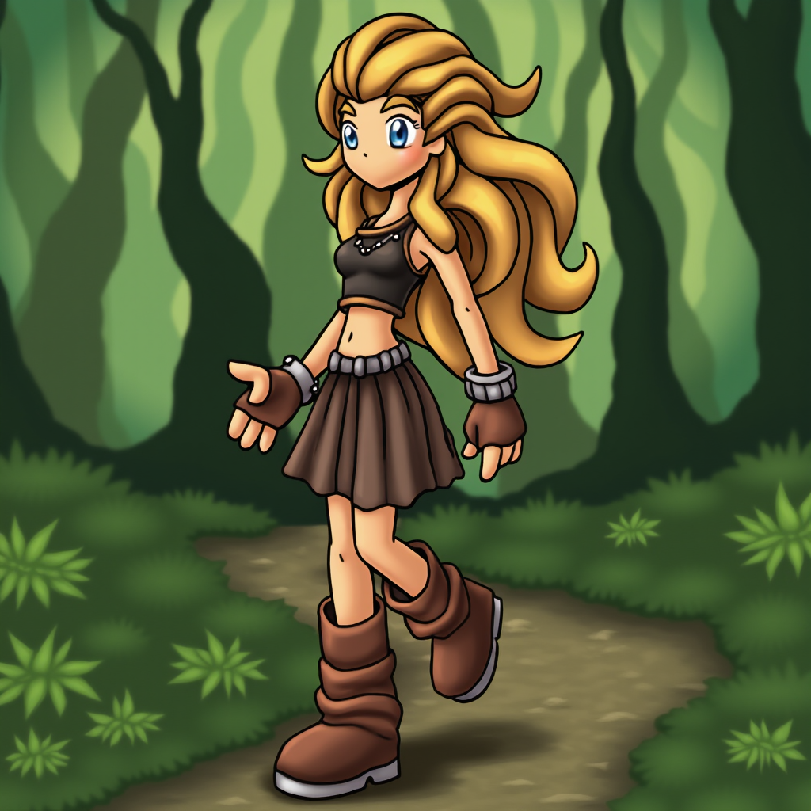
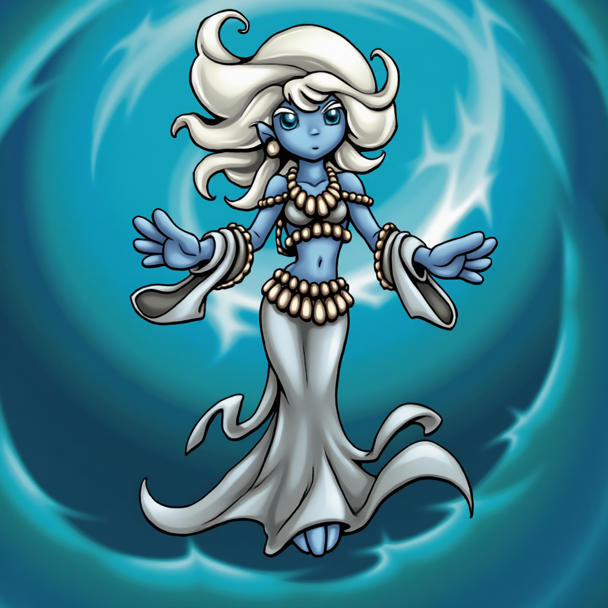
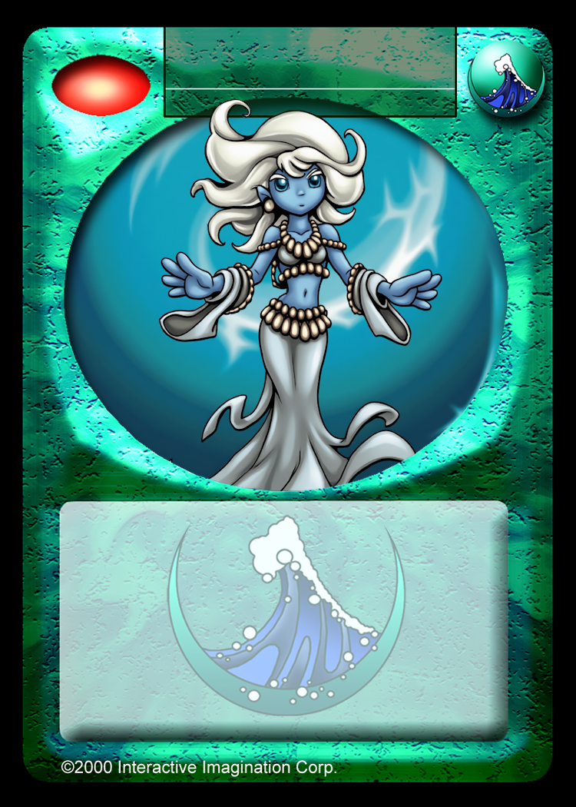

Magi Generation Guide
Running Locally
This section has only been tested locally using an RTX 5090 (32 GB VRAM). However, it should also work with longer generation times on more modest setups like a 16 GB VRAM Nvidia card such as the RTX 4060 Ti. See this Reddit post for reference. If you don't have the required hardcore go to the Running Online section below.
If your hardware meets the requirements, start by learning the basics of ComfyUI. Make sure you can run simple workflows before moving on to Magi-specific generation. Follow this guide to get started (use the Flux Dev version).
Once you have a basic image generation workflow working download the workflow (right click -> save as) and drag it into ComfyUI. Install any missing custom nodes if prompted, and update any inputs (e.g., use the fp8 flux1-dev model version if needed).
Then, download the Imagine.Magi.Generator LoRA from
Tensor.art
(or use this mirror), and place the file into your ComfyUI/models/loras folder.
The following prompt should be prefilled in the workflow:
naroom_magi, female, long blonde wavy hair, blue eyes, light skin, brown boots, stylish outfit, walking in green forest
Press Run to generate an image. If your setup matches exactly, you should see the result below:
At 1024x1024 resolution and 40 steps, image generation completes in about 19 seconds. Reducing the steps to 20 speeds it up to around 12 seconds, though the output may be lower quality.
By default, the seed changes automatically, allowing you to queue many prompts for varied results. If you like an image but want to tweak details, you can re-use its seed: drag the image back into ComfyUI and copy its seed. Then try adjusting the number of steps (e.g., increase from 20 or decrease from 40) or modify the flux_shift value, which keeps the core composition while subtly changing visual details.
Running Online
You can run a low-power version of this model online for free. Images will be lower quality compared to the local workflow since the online version only uses fp8 instead of fp16, even with a paid account. On the paid tier, you can increase the step count from 25 to 40, but a true Flux Dev model with full fp16 precision is not yet available online.
To try it online follow these steps:
- Go to the tensor.art Imagine Magi Generator
- Click Run (blue button, top right)
- At the popup, choose Use recommended
- Sign in or create an account
- Adjust the following parameters:
- VAE:
ae.sft - Resolution:
1024x1024 - Sampler Method: Advanced Enabled
- Sampler:
euler - Scheduler:
simple - Sampling Steps:
25 - Guidance Scale:
3.5 - Seed:
Random
- Sampler:
- Clip Encoder:
T5xxl_fp16.safetensors
- VAE:
- Click Save Presets (bottom of the panel)
- Scroll to the top, type your prompt (see the Prompt Guide)
- Click Generate (uses 2 credits)
Using the prompt below, the system generated this image:
orothe_magi, female, light blue skin, white wavy hair, glowing blue eyes, wearing flowing dress of shells, underwater with arms outstretched, vortex swirling around, ocean floor, sunbeams from surface
This was the first image generated (not cherry picked) and shows a common limitation of the low-power online model: it sometimes can't decide between details, like whether to use a foot or a mermaid tail so it blends both. If you have an Nvidia graphics card, consider setting up a local workflow instead to minimize this issue.
For card art minor mistakes may end up outside the frame. Use an image editing program that supports layers and transparency, such as Paint.NET, and copy your image into the card frame template found here. The result can look like this:
If there are extra details like the hair or a staff that are going out of frame use the eraser tool on the template layer.
Prompt Guide
Flux prompts use natural language. There are no strict rules, but you may get better results by following the general format used during training.
Recommended Prompt Structure
- Region tag
- Gender
- Character description
- Environment description
Use a comma-separated list for prompts.
Prompt Details
-
Region Tag: Use the format
[region]_magi. Valid region tags:- arderial_magi
- bograth_magi
- cald_magi
- core_magi
- dresh_magi
- kybarsteeth_magi
- nar_magi
- naroom_magi
- orothe_magi
- paradwyn_magi
- underneath_magi
- universal_magi
- weave_magi
-
Gender: Add
maleorfemale. -
Appearance:
- Age (e.g., young, elder)
- Skin tone
- Eyes:
- blue eyes, orange eyes, green eyes, etc
- eyes glowing
- eyes closed
- eyes hidden
- eyes covered
- glasses, goggles, monocle
- Clothing and outfits
- Tail (if applicable)
-
Special Training Tags:
- Cactus balls in d'Resh:
cactus_ball - Orothe mermaids:
octopus mermaid,shark mermaid,seahorse mermaid - d'Resh skin and eyebrow rock tags:
skin_rocks,eyebrow_rocks - Feet details:
fur_sandals,boots,shoes,sandals,gross_feet,claw_feet,wrapped_feet,moss boots - Special hand:
finger ring,finger rings,ring_spell,gross fingernails,claw fingernails, - Special ears:
pointy ears,gill ears,floppy ears,fluffy ears,
- Cactus balls in d'Resh:
- Held Items: Such as staff, weapon, orb, etc.
- Pose: walking, standing, crouching, running, etc.
-
Environment:
- Even a simple environment can help:
- lava rock environment
- mountain environment, cloudy sky
- tropical forest
- Even a simple environment can help:
-
Style Tags (optional, not used in training): These can improve visual quality if the result feels flat:
cartoon fantasy illustrationsoft digital brushworklight painterly texturebold cel shadingexpressive line artcohesive background rendering
Example Prompt
naroom_magi, female, long blonde wavy hair, blue eyes, light skin, brown boots, stylish outfit, walking in green forest, soft digital brushwork, light painterly texture